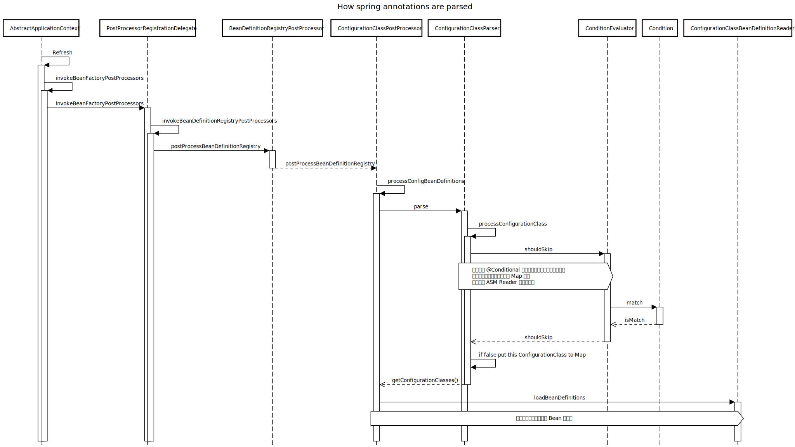

概述
Spring Boot Starters 是一系列为我们提供方便的依赖项描述符，通过在应用中加入这些依赖项描述符，我们就可以很方便的集齐所有需要的依赖和相关技术，不用再为解决依赖问题而浪费时间。比如你想使用 Spring 和 JPA 访问数据，在你的依赖管理文件中加入 spring-boot-starter-data-jpa 就好了，starter 就如它的名字一样 —— 快速启动。
官方的依赖一般遵循 spring-boot-starter-* 模式，* 为一种特定的技术或程序。详细的清单列表见链接。
开发自己的 Starter
一个典型的 Spring Boot Starter 包含用于自动配置和自定义特定技术的基础架构的代码，为了使其易于扩展，可以将专用命名空间中的许多配置密钥公开给环境。最后，提供了一个 “starter” 依赖项，以帮助用户尽可能轻松地入门。
这里我们就以 “acme” 这个自定义启动器为例：
具体而言，自定义启动器可以包含以下内容：
- 包含 “acme” 的自动配置代码的
autoconfigure模块。 starter模块，它提供对autoconfigure模块的依赖以及 “acme” 和通常有用的任何其他依赖。简而言之，starter 应提供开始使用该库所需的一切。
完全没有必要将这两个模块分开。如果 “acme” 具有多种风格，选项或可选功能，则最好将自动配置分开，因为您可以清楚地表示某些功能是可选的。此外，您还可以制作一个启动器，以提供有关那些可选依赖项的意见。同时，其他人只能依靠自动配置模块并以不同的意见来制作自己的启动器。
命名
我们应该确保为启动器提供适当的名称空间。不要使用以 spring-boot 起始的 Maven groupId 命名，因为这是官方标准命名，将来，可能会为您自动配置的内容提供官方支持。
经验而言，你可以使用自己的模块加 spring-boot-starter 来命名。例如，假设您要为 “acme” 创建启动程序，并命名自动配置模块 acme-spring-boot-autoconfigure 和启动器 acme-spring-boot-starter。如果您只有一个将两者结合的模块，请将其命名为 acme-spring-boot-starter。
配置属性
如果你的 starter 提供了配置，请为其使用唯一的名称空间。特别是，不要将配置键包含在 Spring Boot 使用的名称空间中（例如 server，management，spring 等）。
确保为键字段提供 javadoc 文档说明，比如下面的例子：
1 |
|
自动配置（autoconnfigure）模块
自动配置模块包含开始使用该库所需的所有内容。它还可能包含配置属性键定义（例如 @ConfigurationProperties）和可用于进一步自定义组件初始化方式的任何回调接口。
一般会在启动器的依赖文件中包含自动配置模块及其相关使用的特定的库。
自动配置 bean 如何工作
在后台，自动配置是通过标准 @Configuration 类实现的。其他 @Conditional 注解用于约束何时应应用自动配置。通常，自动配置类使用 @ConditionalOnClass 和 @ConditionalOnMissingBean 注解。这样可以确保仅当找到相关的类并且没有声明自己的 @Configuration 时，才应用自动配置。
您可以浏览 spring-boot-autoconfigure 的源代码以查看 Spring 提供的 @Configuration 类（请参阅 META-INF/spring.factories 文件）。
定位自动配置候选人
这是一种 SPI（Service Provider Interface-服务提供接口）机制。spring.factories 和原生 Java SPI 的 service 服务文件提供机制类似。
Spring Boot 检查发布的 jar 中是否存在 META-INF/spring.factories 文件。该文件应在 EnableAutoConfiguration 键下列出您的自动配置类，如以下示例所示：
1 | =\ |
自动配置只能以这种方式加载。确保在特定的程序包空间中定义它们，并且决不要将它们作为组件扫描的目标。此外，自动配置类不应启用组件扫描以查找其他组件。应使用特定的
@Imports 代替。
如果需要按特定顺序应用配置，则可以使用 @AutoConfigureAfter 或 @AutoConfigureBefore 注解。如果要排序某些彼此之间不具有直接了解的自动配置，则也可以使用 @AutoConfigureOrder。该注解与常规 @Order 注解具有相同的语义，但为自动配置类提供了专用的顺序。
与标准 @Configuration 类一样，自动配置类的应用顺序仅会影响其 bean 的***定义***顺序。随后创建这些 bean 的顺序不受影响，而是由每个 bean 的依赖关系以及任何 @DependsOn 关系确定。
Condition 注解
一般在自动配置类中会包含一个或多个 @Conditional 注解。@ConditionalOnMissingBean 注解最为常见，用于使开发人员在对默认设置不满意的情况下覆盖自动配置。

从上图的时序图我们可以看到 @Conditional 注解是在 ConditionEvaluator 的 shouldSkip 中调用，只有满足条件的类才会被加载并注入，其它的 Condition 注解都是基于该注解的。
Spring Boot 包含许多 @Conditional 注解，你可以通过在自己的代码的 @Configuration 类或单个 @Bean 方法中使用这些注解。这些注解包括：
-
通过
@ConditionalOnClass和@ConditionalOnMissingClass注解，可以根据是否存在特定类来包含@Configuration类。由于注解元数据是通过使用 ASM 进行解析的，因此即使该类可能实际上没有出现在正在运行的应用程序类路径上，您也可以使用 value 属性来引用真实的类。如果您更喜欢通过使用 String 值来指定类名称，则也可以使用 name 属性，这里需使用完全限定名称。具体是
MetadataReader的实现类SimpleMetadataReader使用 ASM 的ClassReader调用AnnotationMetadataReadingVisitor来获取注解元数据的。这种机制不适用于 @Bean 方法，后者通常将返回类型作为条件的目标：在方法的条件适用之前，JVM 将加载该类和可能处理的方法引用，如果该类不存在，则该引用将失败。
要处理这种情况，可以使用单独的 @Configuration 类隔离条件，如以下示例所示：
1
2
3
4
5
6
7
8
9
10
11
12
13
14
15
16
17
// Some conditions
public class MyAutoConfiguration {
// Auto-configured beans
static class EmbeddedConfiguration {
public EmbeddedAcmeService embeddedAcmeService() { ... }
}
} -
@ConditionalOnBean和@ConditionalOnMissingBean注解允许根据是否存在特定 bean 来包含 bean。你可以使用value属性按类型指定 bean 或使用名称按名称指定 bean。search属性使你可以限制在搜索 bean 时应考虑的 ApplicationContext 层次结构。 -
@ConditionalOnProperty注解允许基于 Spring Environment 属性包含配置。使用prefix和name属性指定应检查的属性。默认情况下，匹配存在且不等于 false 的任何属性。您也可以使用havingValue和matchIfMissing属性来创建更高级的检查。 -
@ConditionalOnResource注解仅在存在特定资源时才包括配置。可以使用通常的 Spring 约定来指定资源，如以下示例所示：file:/home/user/test.dat。 -
@ConditionalOnWebApplication和@ConditionalOnNotWebApplication注解允许根据应用程序是否为 “Web 应用程序” 来包含配置。 -
@ConditionalOnExpression注解允许基于 SpEL 表达式的结果包括配置。
Starter 模块
Starter 其实是一个空 jar 包。其唯一目的是提供必要的依赖关系以使用库，我们需要的只是仓库中管理依赖的 pom 文件或 build.gradle 文件。
你唯一需要做的就是创建依赖管理文件，并包含你的自动配置模块及改 Starter 特定的依赖。